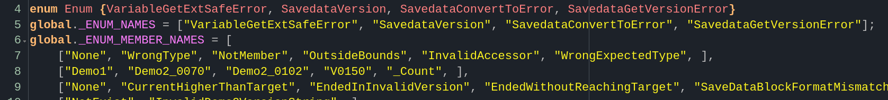

Error handling in GameMaker

While writing the new save conversion system I found myself beginning to do much more thorough error handling than ever before. It was important since I wanted it to never crash, as well as logging anything that went wrong so that the player can send us technical reports if something does slip past our testing.
What I had not anticipated was that in pursuit of decent error handling I'd find myself looking at how error handling is done across several languages and writing metaprograms to generate reflection information. Here's how it went down:
Error handling in the official APIs
GameMaker has two patterns it uses for telling the user something went wrong in code:
Sentinel values
Example: functions that return a value indicating that it failed. For example file_text_open_read returning -1 when the file couldn't be opened.
Unchecked exceptions
Example: json_parse giving you an error message detailing what went wrong if you don't use try/catch (and optionally finally) syntax around the call somewhere.
My opinions on Sentinel Values and Unchecked exceptions
My issue with the former is that it doesn't have enough information about what happened. file_text_open_read could have failed because another program was reading that file, or it could have simply not existed. But I will never be able to know that for certain. And therefore my game cannot tell the player that that is what happened.
My issue with the latter, and why I don't use it in my code is because it is too implicit. Exceptions in dynamically typed languages like GML, JavaScript and Python are of the "unchecked" variant, meaning there is no way to explicitly indicate that a function might throw an exception.
When you define a function in Java that might throw an exception you can say throws <exception> in the function signature.
public static void function(String message) throws IOException {
// implementation
}
GML has no way of doing this, so the user is left looking over the code to find out whether it can fail or not. This slows down development at best and causes unexpected errors at worst. Preferably I'd like to not use either approach.
Errors as values
Errors as values is the simple idea of returning the error from your function alongside the value that you were hoping to retrieve. Languages do this in different ways. For example: Odin has multiple return values for its functions and uses that to return errors.
function_that_can_fail :: proc() -> (value: int, err: os.Error) {
// implementation
return 1, os.Error.None
}
value, err := function_that_can_fail()
if err != os.Error.None {
// handle error
}
"But since GML cannot return multiple values like that we'll be using structs. This is often called result objects.
enum FooError {
Bad,
OtherBad,
}
///@param {Real} value
///@param {Real} error
function FooResult(value, error) constructor {
self.value = value;
self.error = error;
}
///@return {Result}
function foo() {
if (something_went_wrong) {
return new FooResult(-1, FooError.Bad);
}
return new FooResult(42, -1);
}
Unlike returning -1 on fail. This can have multiple different error values, and unlike exceptions the user now made aware that there might be an error directly by the return type of the function. Errors like this can easily be handled by just checking the error value after calling the function.
var _result = foo();
if (_result.error != -1) {
show_debug_message("foo failed with error: " + string(_result.error));
}
"I would say I like this approach in GML if not for its numerous shortcomings:
Requires you to create lots of structs for result objects.
Enums have no type information, meaning its easy to make a mistake where you use a different enum instead of the one you intended to use, leading to obscure bugs.
There is no reflection for enums. So you cannot get the string representation of an enum without manually defining it. This makes logging error information more annoying.
It isn't possible to combine enum values. Therefore propagating errors becomes a lot harder.
The first one is annoying but bearable. Though that does make me more inclined to reserve this kind of error handling for APIs that require me to be more strict: such as save data conversion. The second one as far as I know is also unfixable. If it were possible to specify which enum a function is allowed to return then this would be solved. But that's another language feature.
The last two however are possible to fix with a little bit of metaprogramming. Which is exactly what I have done.
Enum reflection for GML
In order to be able to get string versions of enums you'd have to do the following:
enum CoolError {Bad, Bad2, Bad3}
global.COOL_ERROR_NAMES = ["Bad", "Bad2", "Bad3"];
global.COOL_ERROR_NAME = "CoolError";
This gets annoying to maintain very fast since I need to manually make sure that my enum names are typed correctly, as well as maintaining the order.
Instead I wrote a small Odin program that does this job for me:https://offgrd.xyz/git/Synthasmagoria/gamemaker_enum_reflection_gen
--- GameMaker enum reflection ---
Usage: <program> <project dir> <output gml>
"By giving the program a path to my GM project and a script to dump the results into it will automatically generate enum reflection data for enums that are "tagged" with gml_pragma("enum_reflection");.
gml_pragma("enum_reflection");
enum CoolError {Bad, Bad2, Bad3}
The output of the program looks something like this:
/* This file was generated using enum_reflection tool */
enum Enum { CoolError, _Count }
global._ENUM_NAMES = [ "CoolError", ];
global._ENUM_MEMBER_NAMES = [
["Bad", "Bad2", "Bad3"],
];
function enum_get_name(index) {
return global._ENUM_NAMES[index];
}
function enum_get_member_name(index, member) {
return global._ENUM_MEMBER_NAMES[index][member];
}
function enum_get_member_names(index) {
return global._ENUM_MEMBER_NAMES[index];
}
function enum_get_member_name_full(index, member) {
return $"{global._ENUM_NAMES[index]}.{global._ENUM_MEMBER_NAMES[index][member]}";
}
I don't know if I should be abusing poor ol' gml_pragma like this, but seeing as it doesn't do anything when the string parameter doesn't result in a valid option, I thought it'd be fine.
The code contains an enum containing every enum that has reflection data, as well as two arrays: one containing the names of the enums, and the other containing the names of the enum members. After that there are a bunch of helper functions for retrieving the string representations of the enums.
Using this
var _name = enum_get_member_name_full(Enum.CoolError, CoolError.Bad2);
show_debug_message(_name)
Will print CoolError.Bad2 to the console. This is a lot more descriptive than what it would otherwise be: 1
Furthermore, now that there is an enum for enums in the project, enum error values can be combined by including that information as well:
function Error(type, value) constructor {
self.type = type;
self.value = value;
static toString() {
return enum_get_member_name_full(type, value);
}
}
Then errors can be created and logged like so:
var _error = new Error(Enum.CoolError, CoolError.Bad2);
show_debug_message("Error: "_error);
// this will output "Error: CoolError.Bad2" to the console
"Application
As an example, here's a simplified version of the savedata conversion function that I wrote for K3+.
function savedata_convert_to(data, target_version) {
var _current_version = savedata_get_version(data);
if (_current_version == -1) {
return -1;
}
if (_current_version == target_version) {
return data;
} else if (_current_version > target_version) {
return -1;
}
while (_current_version != target_version) {
if (_current_version < 0 || _current_version >= SavedataVersion._Count) {
return -1;
}
data = _conversion.conversion_function(data);
if (!variable_compare_deep(
data,
new _conversion.comparison_constructor())) {
return -1;
}
current_version = _conversion.to_version;
}
return data;
}
There are several ways that the function can fail: some of which stem from another function called savedata_get_version. But error handling should not be the job of this function, so I want to pass errors from both this function, and savedata_get_version onto the caller, so that we don't end up having error handling in only one place.
So lets add an error enum with reflection, as well as a result object.
gml_pragma("enum_reflection");
enum SavedataConvertToError {
CurrentHigherThanTarget,
EndedInInvalidVersion,
SaveDataBlockFormatMismatch,
}
///@param {Struct} data
///@param {Error|Real} error
function SavedataConvertToResult(data, error) constructor {
self.data = data;
self.error = error;
}
///@param {Struct} data
///@param {Real} target_version
function savedata_convert_to(data, target_version) {
var _current_version = savedata_get_version(data);
if (_current_version == -1) {
return SavedataConvertToResult(-1, _current_version);
}
if (_current_version == target_version) {
return new SavedataConvertToResult(data, -1);
} else if (_current_version > target_version) {
var _error = new Error(
Enum.SavedataConvertToError,
SavedataConvertToError.CurrentHigherThanTarget);
return new SavedataConvertToResult(data, _error);
}
while (_current_version != target_version) {
if (_current_version < 0 || _current_version >= SavedataVersion._Count) {
var _error = new Error(
Enum.SavedataConvertToError,
SavedataConvertToError.EndedInInvalidVersion);
return new SavedataConvertToResult(data, _error);
}
data = _conversion.conversion_function(data);
var _comparison_struct = new _conversion.comparison_constructor();
if (!variable_compare_deep(data, _comparison_struct)) {
var _error = new Error(
Enum.SavedataConvertToError,
SavedataConvertToError.SaveDataBlockFormatMismatch);
return new SavedataConvertToResult(data, _error);
}
current_version = _conversion.to_version;
}
return data;
}
The error can be handled in the exact same way as before.
var _conversion_result = savedata_convert_to(data);
if (_conversion_result.error != -1) {
show_debug_message("Conversion failed with error: " + string(_conversion_result_error));
}
But now we have information on exactly what went wrong, from many different functions return different errors. It could return SavedataConvertToError.EndedInInvalidVersion or it could return SavedataGetVersionError.NotExist. And we have all the necessary information to handle these errors.
Conclusion
If any of this got you thinking then I can recommend this youtube video by rats159 on error handling in different languages:That, as well as learning programming in a few different languages set me on the path of thinking more deeply about error handling.
Check out the project I'm currently helping develop on. There are periodic updates.https://redbatnick.itch.io/iwktk3plus